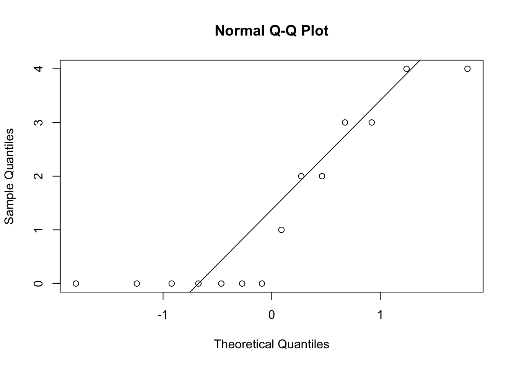
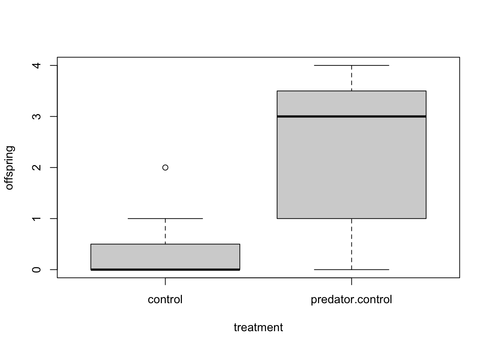
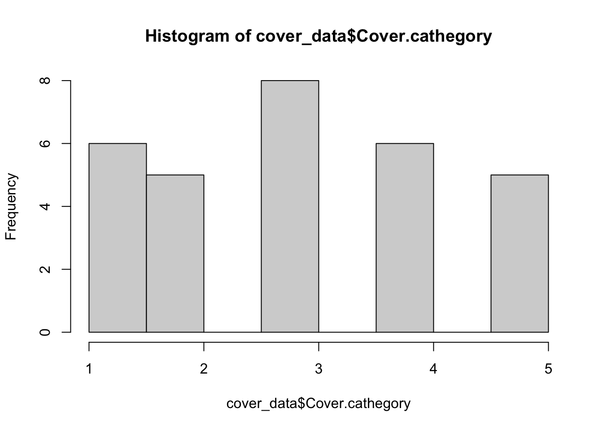
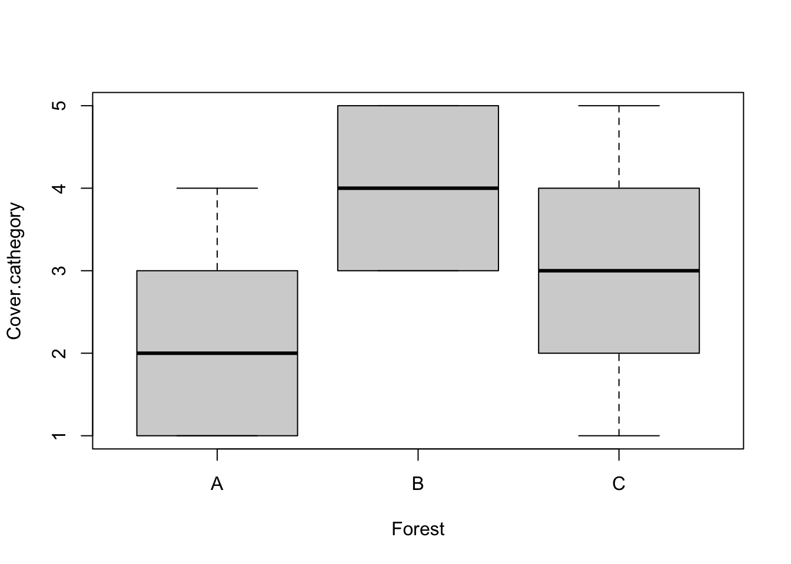
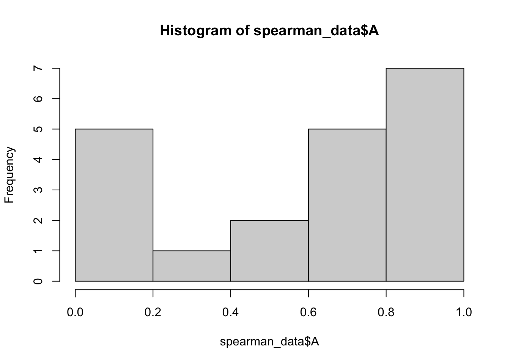
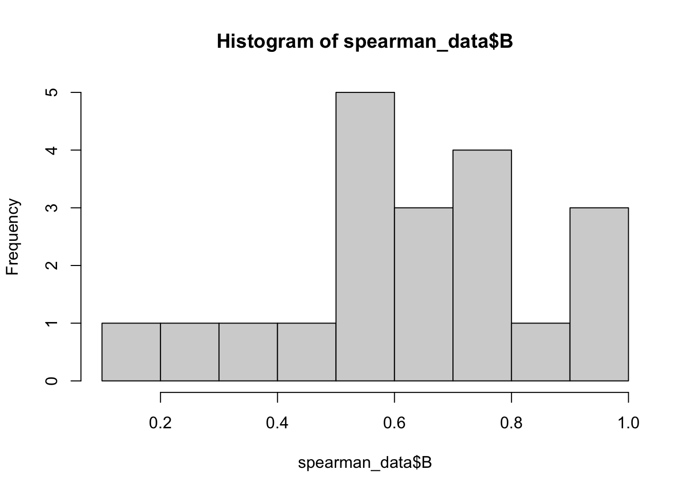
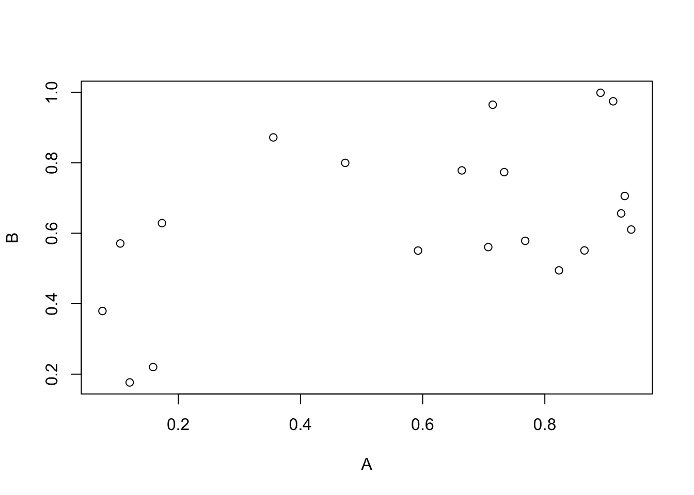

Code
dunlin_data <- read.table("data/dunlin.txt",
header=T,
sep="\t",
dec=",") De statistiska test vi behandlat nu är parametriska test, dvs de förutsätter att datan eller residualerna följer vissa fördelningar (exempelvis normalfördelning). Simuleringar visar också att parametriska modeller är väldigt robusta även mot avvikelser i normalförderade residualer (se exempelvis Knief & Forstmeier 2021). Om residualerna dessutom avviker från normalfördelning kan det i många fall lösas genom transformeringar (se tidigare tutorial) eller genom att använda generaliserade linjära modeller som kan specificera en annan errorstruktur (kommer presenteras i en framtida tutorial).
Ibland har man dock väldigt “konstiga” data, och speciellt om de samtidigt kommer från små dataset så kan man ibland behöva överväga icke-parametriska metoder.
Icke-parametriska metoder bygger på att värderna rankas, dvs är ett visst värde generellt högre eller lägre än de andra värderna. Testen använder sig inte av de exakta mätvärderna och tappar därmed mycket information (de är svaga test). Testen har svårare att upptäcka mönster som faktiskt finns och skall därmed bara användas i nödfall.
Man kan överväga ickeparametriska metoder om:
Responsvariabeln är på ordinalskala (till exempel att arters täthet är skattad som ovanlig, vanlig, mycket vanlig), kategorierna är därmed ordnade men går inte att översätta till mätvärden
Responsvariabeln innehåller väldigt många nollvärden
Datasetet innehåller några kraftigt avvikande värden (outliers) som du litar på och behöver inkludera i datasetet
Datasetet är litet och residualerna är långt ifrån normalfördelade
Icke-parametriska test skall ses som ett svagt test som används som en nödlösning i små och avvikande dataset. Data som uppfyller många av punkterna ovan kan analyseras med parametriska test om datasetet är stort nog.
De icke-parametriska testen som oftast används är:
Wilcoxons test - alternativ till t-test
Kruskal Wallis test - alternativ till envägs-ANOVA
Spearman-korrelation - alternativ till parametrisk korrelation
Wilcoxons test (kallas ibland Mann-Whitney U-test) används som ett icke-parametriskt alternativ till t-test
Vi vill undersöka om den sydliga kärrsnäppans häckningsframgång kan förbättras om man har predatorkontroll. Vi har därför inventerat antalet ungar hos honor i slumpvis utvalda bon i områden där man haft predatorkontroll, och områden där inga åtgärder gjorts.
Ladda ner följande fil dunlin.txt (högerklicka, välj “spara länk som”) och spara filen på din hårddisk i en mapp med ett lämpligt namn.
Fortsätt med att läsa in datasetet och ge det ett namn, i det här fallet kallar vi det dunlin_data. En detaljerad beskrivning i hur man läser in filer finns i vår tidigare tutorial Läsa in data i R.
Glöm inte att dokumentera din kod i ett script, med kommentarer som förklarar vad du gör! Se vår tutorial om script om du behöver påminnelse om hur man skapar och använder script.
dunlin_data <- read.table("data/dunlin.txt",
header=T,
sep="\t",
dec=",") Börja med att titta på datans struktur med str().
str(dunlin_data)'data.frame': 14 obs. of 2 variables:
$ offspring: int 0 0 1 0 2 0 0 3 4 3 ...
$ treatment: chr "control" "control" "control" "control" ...head(dunlin_data) offspring treatment
1 0 control
2 0 control
3 1 control
4 0 control
5 2 control
6 0 controlDet ser ut som om vi har många nollor i datasetet. Låt oss se på ett histogram:
hist(dunlin_data$offspring)
De flesta honor verkar inte ha fått några ungar. Låt oss se på en QQ-plot som vi även använde i vår tutorial om t-test
qqnorm(dunlin_data$offspring)
qqline(dunlin_data$offspring)
Vi vill att våra värden skall följa en diagonal, men det gör de inte. Vi har ett dataset som inte uppfyller t-testets krav på normalfördelade data, och vi kan inte få en bättre fördelning genom att transformera då datasetet mest består av nollvärden som kommer fortsätta att vara nollvärden.
Vi gör en enkel graf med boxplot()
boxplot(offspring~treatment,
data = dunlin_data)
Hur tolkar du grafen? Ser det ut som att antalet avkomma skiljer sig åt beroende på om det är predatorkontroll eller ej?
Vi vill nu göra ett Wilcoxons test för att undersöka om vår responsvariabel (beroende variabel) offspring beror av vår förklarande variabel (oberoende variabel) treatment, med andra ord om antalet avkomma beror av huruvida området haft predatorkontroll eller ej
Vi specificerar en modell med hjälp av funktionen wilcox_test() i paketet coin. Om du inte sedan tidigare har paketet installerat så gör du det med koden install.packages("coin"). Innan du använder paketet behöver du läsa in det i din session i R genom funktionen library() Vi väljer att spara resultatet i ett objekt som vi kallar m.dunlin. Vi behöver ange att treatment är en faktor (dvs har kategorier) genom att omsluta det med funktionen as.factor().
library(coin)Loading required package: survivalm.dunlin <- wilcox_test(offspring ~ as.factor(treatment),
data = dunlin_data)En sidonotering: många textböcker förelår att man använder funktionen wilcox.test() (jag vet, snarlikt namn) som inte kräver att man laddar ner några paket. Den implementeringen av testet är dock begränsad och har exempelvis problem om man har många siffror med samma värde (som vi har med många nollor). Att som vi gjort alltid använda funktionen wilcox_test() i paketet “coin” är därmed ett bättre val.
Vi skriver in modellens namn i konsolen och får våra resultat
m.dunlin
Asymptotic Wilcoxon-Mann-Whitney Test
data: offspring by
as.factor(treatment) (control, predator.control)
Z = -2.0545, p-value = 0.03993
alternative hypothesis: true mu is not equal to 0Vi kan nu inspektera resultatet. Vi får teststatistika (Z) samt ett p-värde. Vi får inga frihetsgrader i det här testet.
Eftersom vårt p-värde är mindre än 0.05 säger vi att antalet avkommor skiljer sig åt beroende på behandling. Stämmer det om du tittar på din boxplot?
Den sydliga kärrsnäppan fårt fler avkommor om man tillämpar predatorkontroll än i områden utan predatorkontroll (Wilcoxons test, Z = -2.05, p = 0.040).
Kruskal Wallis test är en ickeparametrisk ersättning till envägs ANOVA. Det är ett svagare och mindre flexibelt test än en vanlig envägs ANOVA och skall bara användas i nödfall.
Vi vill undersöka om täckningsgraden av blåbär skiljer sig åt i tre skogar. Täckningsgraden har skattats enligt Braun-Blanquet-skalan med fem nivåer (1-5) där täckningsgraden ökar från 1 -> 5. Data är därmed ordnade (1 är lägre än 5) men på ordinalskala (kategorierna är inga mätvärden).
Ladda ner följande fil cover.txt (högerklicka, välj “spara länk som”) och spara filen på din hårddisk i en mapp med ett lämpligt namn.
cover_data <- read.table("data/cover.txt",
header=T,
sep="\t",
dec=",") Börja med att titta på datans struktur med str().
str(cover_data)'data.frame': 30 obs. of 2 variables:
$ Cover.cathegory: int 1 2 1 4 3 2 3 1 1 2 ...
$ Forest : chr "A" "A" "A" "A" ...head(cover_data) Cover.cathegory Forest
1 1 A
2 2 A
3 1 A
4 4 A
5 3 A
6 2 ALåt oss se på ett histogram
hist(cover_data$Cover.cathegory)
Vi ser att våra data ser väldigt jämna ut, och kanske inte är normalfördelade. Dessutom vet vi att det är ordinaldata, dvs vår responsvariabel är inte mätvärden utan i ordnade kategorier. Bara det senare faktumet gör att vi inte skall använda oss av en vanlig envägs-ANOVA.
Vi gör en enkel graf med boxplot()
boxplot(Cover.cathegory ~ Forest,
data = cover_data)
Hur tolkar du grafen? Ser det ut som att blåbärens täckningsgrad skiljer sig åt mellan skogarna?
Vi vill nu göra ett Kruskal Wallis test för att undersöka om vår responsvariabel (beroende variabel) Cover.cathegory beror av vår förklarande variabel (oberoende variabel) Forest
Vi specificerar en modell med hjälp av funktionen kruskal.test() och väljer att spara resultatet i ett objekt som vi kallar m.cover.
m.cover <- kruskal.test(Cover.cathegory ~ Forest,
data = cover_data)m.cover
Kruskal-Wallis rank sum test
data: Cover.cathegory by Forest
Kruskal-Wallis chi-squared = 11.883, df = 2, p-value = 0.002629Vi har en signifikant efekt av Forest, d.v.s. täckningsgraden för blåbär skiljer sig åt mellan de olika skogarna. Men vilka skogar skiljer sig åt? Vi behöver göra ett post-hoc test! Om vi inte hade haft en signifikant effekt skall vi däremot inte göra ett post-hoc test.
När man gör ett posthoc-test på en icke-parametrisk envägs-ANOVA använder man sig av Dunn Test, vilket finns tillgängligt i paketet dunn.test. Om du inte sedan tidigare har paketet installerat så gör du det med koden install.packages("dunn.test"). Innan du använder paketet behöver du läsa in det i din session i R genom funktionen library()
När vi läst in paketet använder vi oss av funktionen dunn.test(). Först anger vi vår responsvariabel, och det gör vi enligt formeln Datatset$Variabel, vilket i vårat fall blir cover_data$Cover.cathegory. Efter det anger vi vår förklarande faktor på samma sätt, vilket blir cover_data$Forest, och slutligen anger vi metoden för att korrigera p-värden för multipla test. Vanligt är att använda sig av Holm’s metod, anges med method = "holm".
library(dunn.test)
dunn.test(cover_data$Cover.cathegory, cover_data$Forest, method = "holm") Kruskal-Wallis rank sum test
data: x and group
Kruskal-Wallis chi-squared = 11.8825, df = 2, p-value = 0
Comparison of x by group
(Holm)
Col Mean-|
Row Mean | A B
---------+----------------------
B | -3.414601
| 0.0010*
|
C | -1.298327 2.116273
| 0.0971 0.0343
alpha = 0.05
Reject Ho if p <= alpha/2Vi får en tabell med jämförelser. Om vi börjar med Kolumn A och Rad B får vi p-värdet 0.0010. Det betyder att täckningsgraden för blåbär skiljer sig åt mellan skogarna A och B.
Kolumn A och rad C ger ett p-värde på 0.0971. Täckningsgraden skiljer sig alltså inte åt mellan skogarna A och C.
Kolumn B och rad C ger ett p-värde på 0.0343. Täckningsgraden av blåbär skiljer sig åt mellan skogarna B och C.
Täckningsgraden av blåbär skiljer sig åt mellan de olika skogarna (Kruskal Wallis test, \(\chi\) 2 = 11.883,d.f. = 2, p = 0.003). Post-hoc analys visar att täckningsgraden är högre i skog B än i skog A (Dunnet’s test, p = 0.001) och C (Dunnet’s test, p = 0.034). Täckningsgraden skiljer sig inte åt mellan skog A och C (Dunnet’s test, p = 0.097).
En vanlig korrelationsanalys som vi tidigare gjort kräver att datat är normalfördelat, och även om det kan hantera mindre avvikelser från det så har man ibland data som inte alls är normalfördelat. Då använder man sig av Spearman-korrelation, som är en icke-parametrisk korrelationsanalys som baserar sig på datats rank och inte på de faktiska värderna. Därmed är det mindre kraftfullt än en parametrisk korrelation, men kan hantera avvikande data.
Ladda ner följande fil spearman.txt (högerklicka, välj “spara länk som”) och spara filen på din hårddisk i en mapp med ett lämpligt namn.
spearman_data <- read.table("data/spearman.txt",
header=T,
sep="\t",
dec=",") Börja med att titta på datans struktur med str().
str(spearman_data)'data.frame': 20 obs. of 2 variables:
$ A: num 0.664 0.941 0.768 0.912 0.925 ...
$ B: num 0.778 0.61 0.578 0.974 0.656 ...head(spearman_data) A B
1 0.6640666 0.7782157
2 0.9413902 0.6104316
3 0.7678628 0.5783860
4 0.9118415 0.9743616
5 0.9249759 0.6561892
6 0.7146678 0.9645745Låt oss se på ett histogram över variabel A
hist(spearman_data$A)
Det ser verkligen inte ut som en normalfördelning. Hur ser variabel B ut?
hist(spearman_data$B)
Variabel B ser lite bättre ut, men det är som helhet ett dataset som avviker kraftigt från normalfördelningen. Att analysera det med en parametrisk korrelation bryter mot dess antagande om normalfördelning, och då kan vi inte lite på en sådan korrelations resultat.
Som vanligt gör vi en graf innan vi börjar med vår statistiska modellering
plot(B ~ A, data = spearman_data)
Vi ser i grafen att det eventuellt är en positiv korrelation mellan A och B, men också att speciellt variabel A har en underlig fördelning med mest låga eller höga värden, vilket vi också såg i vårt histogram.
Vi gör nu en icke-parametrisk korrelation, och den har stora likheter med korrelationen vi tidigare gjort. Vi använder oss fortfarande av funktionen cor.test(), den enda skillnaden är att vi anger method = "s" (står för Spearman) där vi tidigare angett "p"
m.spearman <-cor.test(spearman_data$A, spearman_data$B, method = "s")Vi skriver in modellens namn och tittar på resultatet
m.spearman
Spearman's rank correlation rho
data: spearman_data$A and spearman_data$B
S = 782, p-value = 0.07226
alternative hypothesis: true rho is not equal to 0
sample estimates:
rho
0.4120301 Vi ser att A och B inte är signifikant korrelerade eftersom p-värdet är 0.07226. Vi får också en korrelationskoefficient (kallas rho) på 0.412.
Vad hade hänt om vi analyserat datat med en parametrisk korrelation? Vi testar, genom att använda method = "p"
m.pearson <-cor.test(spearman_data$A, spearman_data$B, method = "p")
m.pearson
Pearson's product-moment correlation
data: spearman_data$A and spearman_data$B
t = 2.6376, df = 18, p-value = 0.01672
alternative hypothesis: true correlation is not equal to 0
95 percent confidence interval:
0.1115075 0.7866933
sample estimates:
cor
0.5279756 Vi får nu ett signifikant p-värde, och om vi inte hade vetat att våra data inte var normalfördelade hade vi dragit den felaktiga slutsatsen att A och B var positivt korrelerade. Men eftersom datat inte uppfyller kraven för att få göra en parametrisk korrelation så kan vi inte lite på p-värderna från en sådan korrelation.